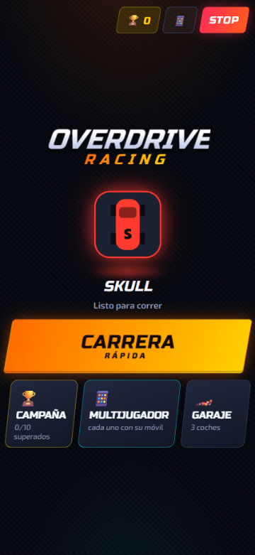
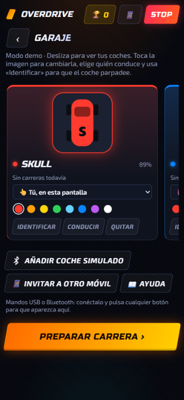
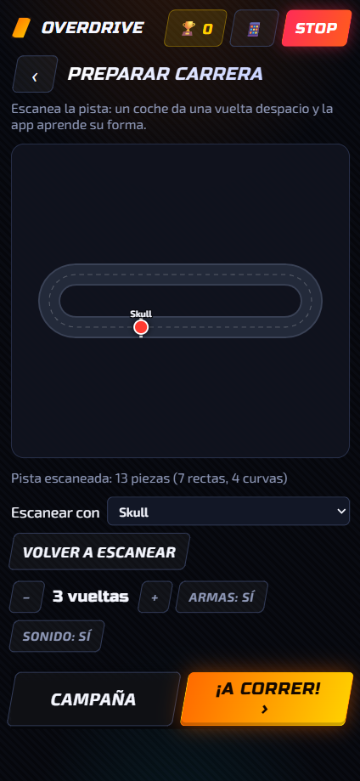
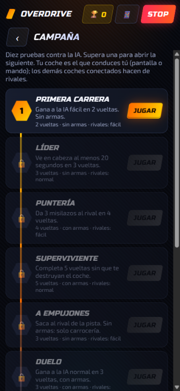
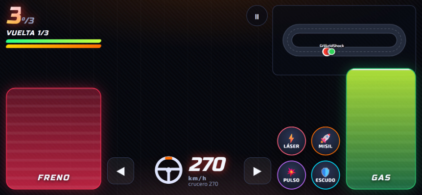
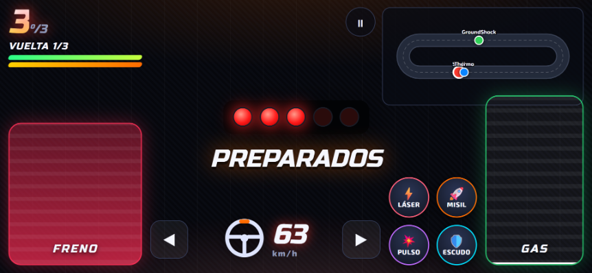
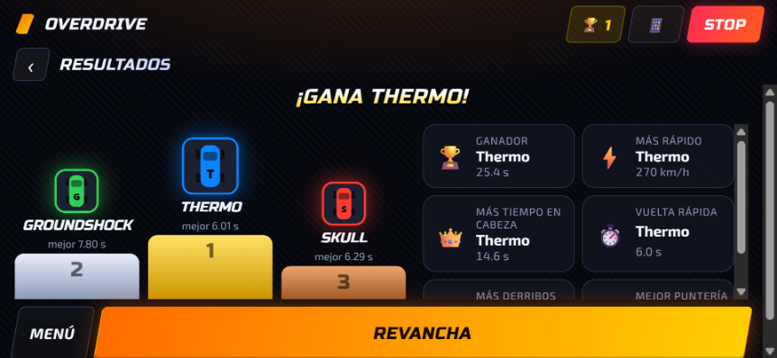
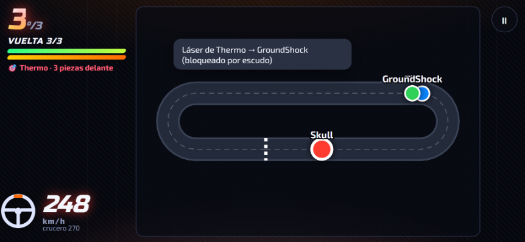
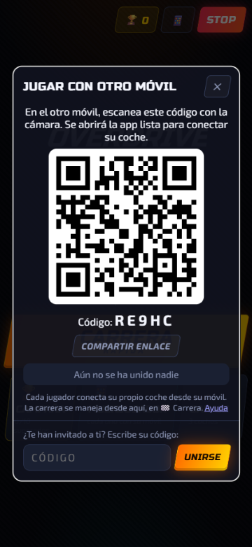
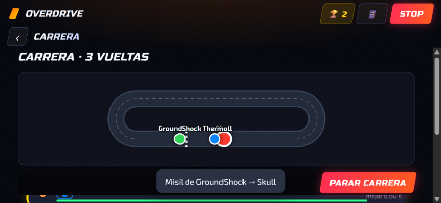

Anki Overdrive cars, charged, and the official track set up. The cars steer by reading codes printed on the track: on the floor without a track they don't work.
A browser with Web Bluetooth:
Android: Chrome or Edge (recommended).
Windows, macOS, ChromeOS: Chrome or Edge.
iPhone / iPad: Safari doesn't support it; use the free Bluefy browser.
Brave: it ships with it turned off; see below how to enable it.
Optional: one or more controllers (Xbox, PlayStation, 8BitDo…) over USB or Bluetooth.
Tip: on your phone, open the app and use Add to Home screen in the browser menu to keep it like any other app, full screen.
Bluetooth permissions

Main menu
Turn on Bluetooth on your phone or computer.
Switch the car on and place it on the track. If it doesn't wake up, leave it on the charger for a moment.
In the main menu, tap the car slot (or open the Garage) and press Connect car. The browser opens a list of nearby cars (they show up as Drive or by their name).
Pick the car and press Pair / Connect. Repeat from the Garage to add more cars.
The app only gets access to the car you pick in that list; it can't see your other devices.
Android
The first time, Chrome asks for the Nearby devices permission: tap Allow. If you denied it, go to Settings → Apps → Chrome → Permissions → Nearby devices.
On Android 11 or earlier, Bluetooth also needs location turned on (Android requires it to search for devices; the app doesn't use your location).
The page must be opened over https (the app link already is).
iPhone / iPad
Install Bluefy – Web BLE Browser from the App Store and open the app link with it.
When iOS asks whether Bluefy may use Bluetooth, tap Allow (or turn it on in Settings → Bluefy → Bluetooth).
Windows and macOS
Use Chrome or Edge with the computer's Bluetooth turned on.
On macOS, give the browser Bluetooth access in System Settings → Privacy & Security → Bluetooth.
Brave
Brave turns Web Bluetooth off by default. Type brave://flags in the address bar, search for Web Bluetooth, set it to Enabled and restart the browser. If you can't find the option, use Chrome or Edge.
Checking or removing permissions
In Chrome: the padlock next to the address → Site settings. There you can see the Bluetooth devices you have allowed and remove them.
How to play: 3 steps
From the main menu: Quick race takes you to set up the race, Campaign to the levels, Multiplayer to invite another phone and Garage to your cars. At the top, 🏆 counts your wins and STOP brakes every car.

Garage: swipe to see each car

Race setup
1 · Garage. Connect each car. Swipe the cards to move from one to the next. Each card shows where the car is and its battery: 🛣️ On the track, 🔌 Charging / Charged or ⚠️ Off the track (you lifted it or it came off). The race won't start while any car is on the charger or off the track (the button tells you which one); if one comes off mid-race, every phone warns about it and its screen flashes red until you put it back. On each card you can:
tap the picture to give it a photo of your own (from the gallery or the camera);
choose its light color;
choose who drives it: You, on this screen, a controller, the AI (easy, normal or hard) or a guest's phone;
press Identify: that car blinks so you know which one it is;
name it: the app tries to recognise the model (Skull, Thermo…) when connecting, but many browsers don't allow it. If it can't tell, the card asks “Which car is it?”: press Identify, see which one blinks and pick its model from the list (or type any name). It's remembered for that car. To change it, tap the name;
Drive to try it freely outside a race.
2 · Race setup. Scan the track with whichever car you like, choose laps, weapons and sound, and press Race! or go into the Campaign.
3 · Race. First the cars drive themselves to the starting line, each in its own lane, and stop. Then the starting light begins. During the race the whole screen is your car: pedals, weapons, speed and a minimap (or, if you play with a controller, a large view of the track). Tap the minimap to see the full standings. At the end, the podium and the awards.
Your phone as a steering wheel
On a phone you play in landscape, like a steering wheel: when you press Race! or a campaign level, the app goes full screen and landscape (on iPhone, turn the phone yourself). The brake sits under your left thumb and the gas under your right.
Tilt the phone right or left to change lanes; if you keep it tilted, it keeps changing. Go back to the center to let go. The wheel drawn next to the speed turns with you.
Center takes the current position as straight. Invert in case steering goes the wrong way on your phone. Buttons goes back to the lane arrows.
The first time, the browser may ask for permission to use the motion sensor: accept it.
Campaign

The campaign path
Ten challenges against the AI that unlock one after another, like a path (progress is saved on the phone). Your car is the one you drive; the other connected cars act as rivals, so some levels need 2 or 3 cars.
First race: beat the easy AI over 2 laps.
Leader: stay in the lead for 20 s.
Sharpshooter: hit the rival with 3 missiles.
Survivor: 5 laps without getting destroyed.
Bumper cars: push the rival off the track (no weapons).
Duel: beat the normal AI with weapons.
Hunter: knock the rival out twice.
Time trial: set the fastest lap against the hard AI.
Two against one: finish ahead of at least one of two AIs.
Champion: beat two hard AIs.
During the challenge, the goal and your progress are shown at the top (“missile hits 1/3”). At the end: Level complete! with a button to the next level, or Retry.
Stats
After each race, awards are handed out: 🏆 winner, ⚡ fastest, 👑 most time in the lead, ⏱️ fastest lap, 💥 most knockouts and 🎯 best aim. Each car keeps its history on the phone: races, wins, podiums, top speed, best lap, time in the lead and knockouts. You'll find it on its card in the Garage, and your total wins in 🏆 at the top.
Driving

Racing: the phone is the controller
GAS (right pedal): drag it up; the speed stays wherever you leave it, like cruise control.
BRAKE (left pedal): stops the car.
Weapons (round buttons next to the gas): Laser, Missile, Pulse and Shield. A ring shows the recharge; they go dark when you're out of energy.
Center: speed in km/h (at 1:50 scale) with the steering wheel, and the ◀ ▶ lane arrows if you don't use the gyroscope.
Top left: your position, the lap, your armor (green bar) and energy (orange bar), and the rival you're aiming at 🎯.
Top right: the minimap with every car (tap it to see the standings) and ⏸ to stop the race.
If you get hit, the screen turns red and the phone vibrates.
Your car makes noise: the engine roars louder the more you accelerate. Turn it off with Engine: off in Race setup (or Sound: off, which mutes everything).
Outside a race, in the Garage, Drive opens Free drive mode, with gas, lanes, U-turn, weapons and light colors.
Scanning the track
To know who's ahead, count laps and draw the map, the app needs to know the track. Press Scan track in Race setup: the car does a slow lap and stops at the starting line. You'll see the message Track scanned: 13 pieces….
If you don't scan it, the app learns it on its own while you drive (on tracks without a start piece it takes two laps). If you change the track, press Scan again.
Weapons
As in the original game, the weapons are virtual: the app works out the hit and the car that's hit flashes red and slows down. With its armor at 0 it is knocked out for 3 seconds. Energy recharges on its own. Each weapon has its own sound.
Weapon
Energy
Range
Effect
Laser
8
1 piece ahead
−8 armor, slows it a little
Missile
35
3 pieces ahead
−30 armor, slows it hard
Pulse
50
1 piece, ahead and behind, everyone
−10 armor, almost stops them
Shield
30
—
Blocks everything for 3 s
Racing and AI

Starting light

Podium and awards
In the Garage, choose each car's driver: you on screen, a controller, another phone or the AI.
In Race setup, choose the number of laps, whether there are weapons, and the sound.
Press Race!: the cars head to the start (TO THE GRID) and the screen switches to your car's controls. 5 red lights with beeps and, when they go out, GO! Until then the cars won't move even if you hit the gas.
Cars driven by the AI can't be controlled from the screen.
The app counts laps, shows your position and announces the last lap. At the end the podium appears with the awards, and you can ask for a Rematch or go back to the Menu.
AI level
What it does
Easy AI
Takes it easy, hardly ever shoots and never pushes.
Normal AI
Race pace, shoots often and sometimes rams you from behind in the corners.
Hard AI
Fast and aggressive: rams you in the corners and pulls up alongside to push you off the track.
The AI's shoves are real: the cars really do crash and can come off the track. If the track is on a table, keep an eye on the edges.
USB and Bluetooth controllers

With a controller: a large view of the track
Connecting the controller
Bluetooth: first pair the controller with the phone or computer from the system's Bluetooth settings. Put the controller in pairing mode (Xbox: pair button; PlayStation: Create/Share + PS; 8BitDo: depends on the model).
USB: plug it in. On Android you need a USB-C/OTG adapter.
With the app open, press any button on the controller: the browser only exposes it to the page after that. Controller 1 connected will appear.
While a controller drives your car, the screen hides the touch controls and shows a large view of the track with every car.
Controller setup
In the Garage, with the controller connected, press 🎮 Controller 1 setup. You'll see each action with the button or stick that does it, and everything you press lights up so you can try it. Press Change on an action and then the button or stick you want; + adds another one, and × removes one. It's saved on the phone for that controller model; Reset goes back to the defaults below.
Gas on a stick: if your controller has no analog triggers (some only click), put the gas on a stick: in Gas → Change, push the stick up. The further you push it, the faster the car goes, and when you let go it brakes, just like a trigger. The “Gas” bar on that screen shows how much gas you're giving.
Default buttons:
Button
Action
RT (right trigger)
Gas (the harder you press, the faster)
LT or B
Brake
LB / RB, D-pad ◀ ▶, left stick
Left / right lane
D-pad ▲ ▼
More / less speed
Y
U-turn
A / X
Laser / Missile
L3 / R3 (press the sticks)
Pulse / Shield
Start
Start race
Select / Back
Brake all
One phone, several controllers
Connect every car and every controller to a single phone. In the Garage, choose Controller 1, Controller 2… as each car's driver. Each controller drives only its own car. A controller with no car assigned drives the car you have open on screen.
Which controller is which? In the Garage, press any button on a controller: it vibrates, its car blinks and its card lights up with “🎮 Controller 1”. The other way round, Identify on a car's card makes the car blink and the controller driving it vibrate. (Vibration depends on the controller and the browser; Xbox and PlayStation controllers usually vibrate in Chrome.)
Playing with several phones

Invite: QR and code

If you're not driving (or you've already finished): the track, live
On the host phone, press Multiplayer in the menu (or 📱 at the top). A QR code and a 5-letter code appear.
On the other phone, scan the QR code with the camera, or open the app, tap 📱 and type the code under Were you invited?.
That phone connects its own car over Bluetooth and drives it with the screen or its controller.
The host starts the race from Race setup. Each phone sees the race screen for its own car: starting light, pedals, weapons, its lap and position and the minimap, with sounds and vibration.
Both phones need internet (Wi-Fi or mobile data) to find each other; after that they talk directly. Each car can only be connected to one phone at a time.
Keyboard (computer)
WS / ↑↓
More / less speed
AD / ←→
Lane
Space
Brake
U
U-turn
QERF
Laser, Missile, Pulse, Shield
1–9 / 0
Switch car / race screen
Esc
Brake all
Troubleshooting
The car doesn't show up in the list
Put it on the charger for a moment to wake it up and try again.
Make sure it isn't connected to another phone or another app (a car only accepts one connection).
Check the Bluetooth permissions above (Nearby devices on Android, Brave…).
“This browser has no Bluetooth”
You're in a browser without Web Bluetooth (Safari, Firefox, or Brave without enabling it). Use Chrome or Edge; on iPhone, Bluefy.
The car drives around looking for the track
The cars can only drive on the official track: they read the codes printed on it. On the floor or any other surface they can't be driven.
It doesn't count laps or there's no target
Scan the track (or scan it again if you've changed it).
The controller does nothing
Press a button on the controller with the app open. In the Garage, check which car that controller is assigned to.
The other phone can't join
Make sure both have internet and that the code is the one the host is showing right now (it changes every time the app is opened). Some office Wi-Fi networks block direct connections between devices; try mobile data.
I still see the old version
Close the app completely and open it again, or reload the page.